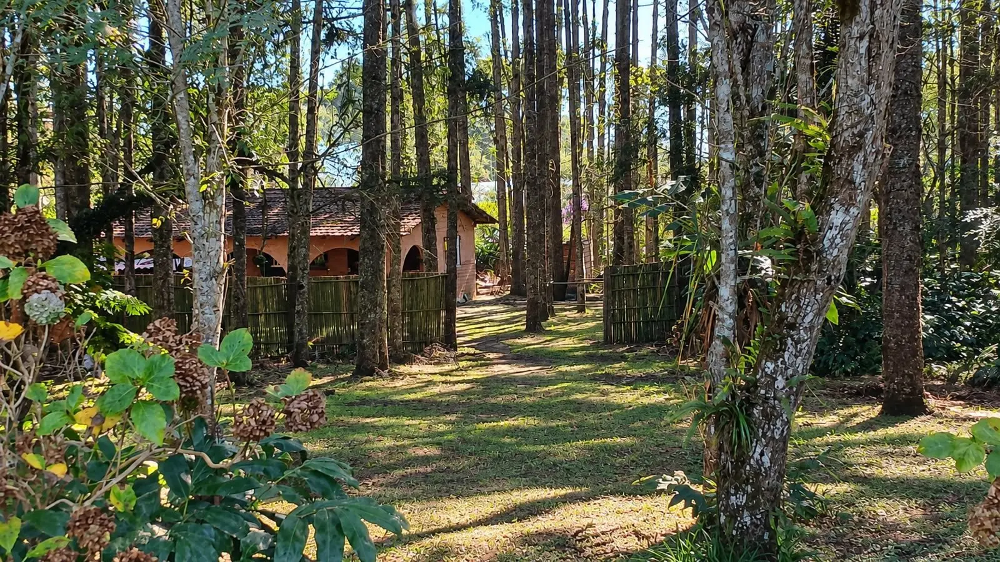
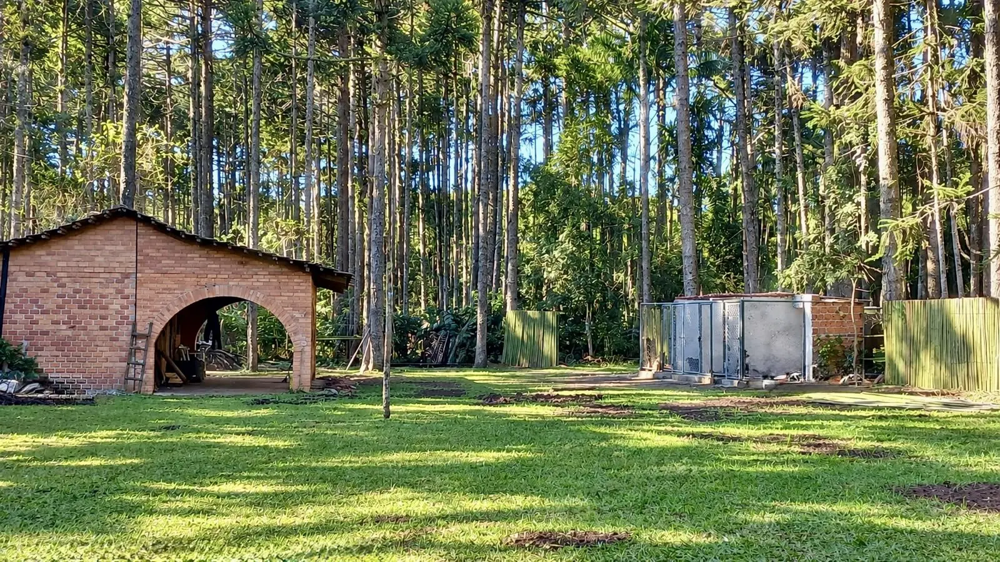
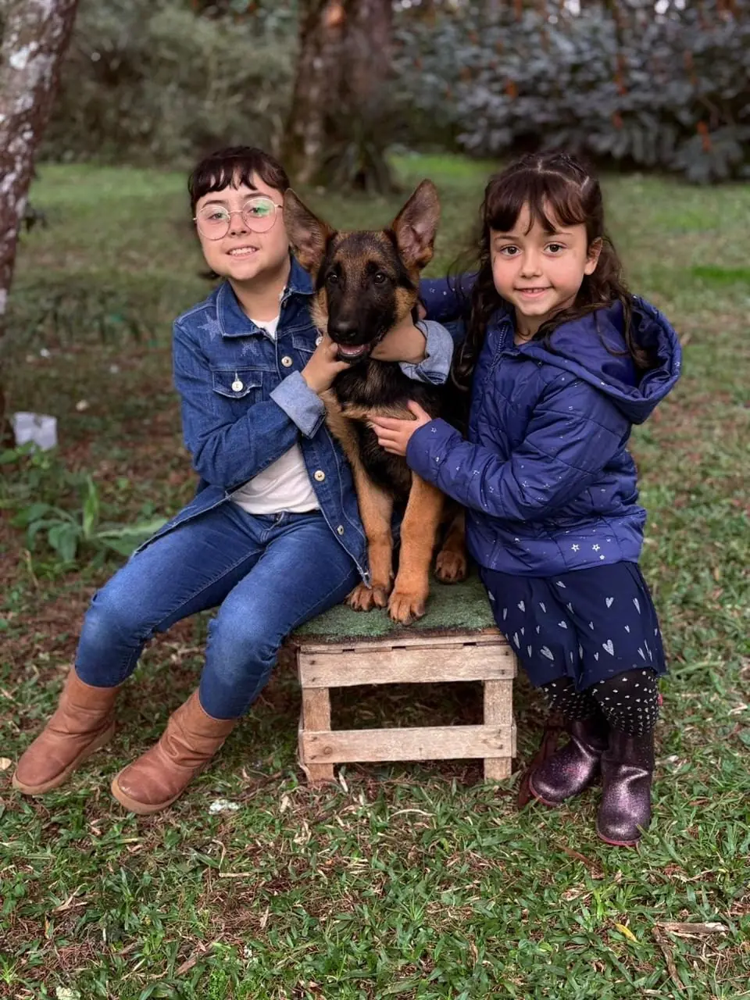
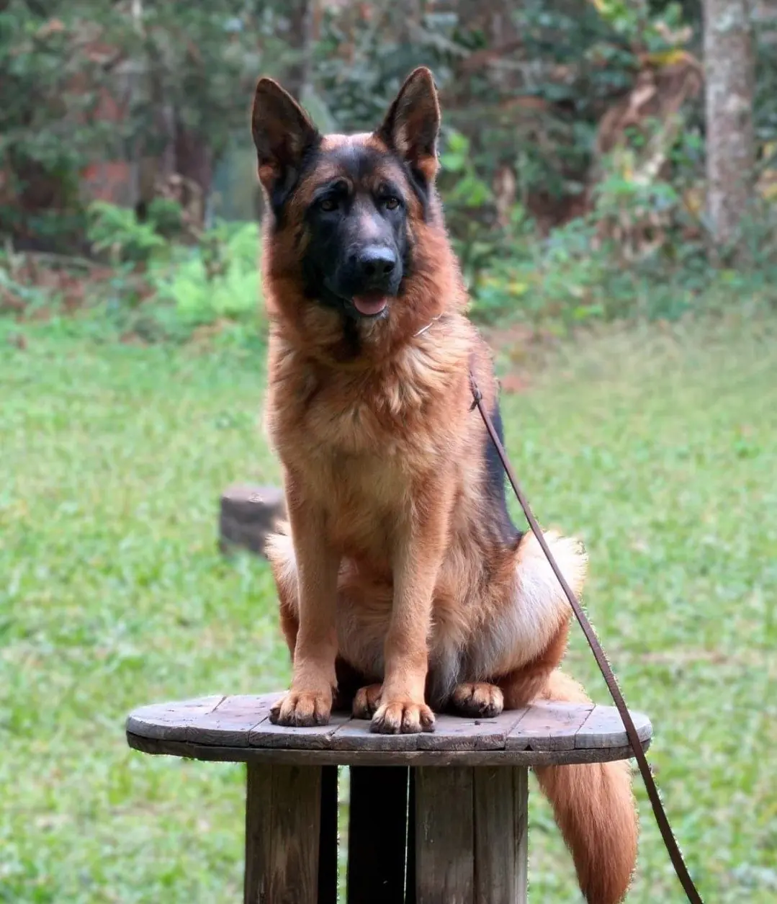
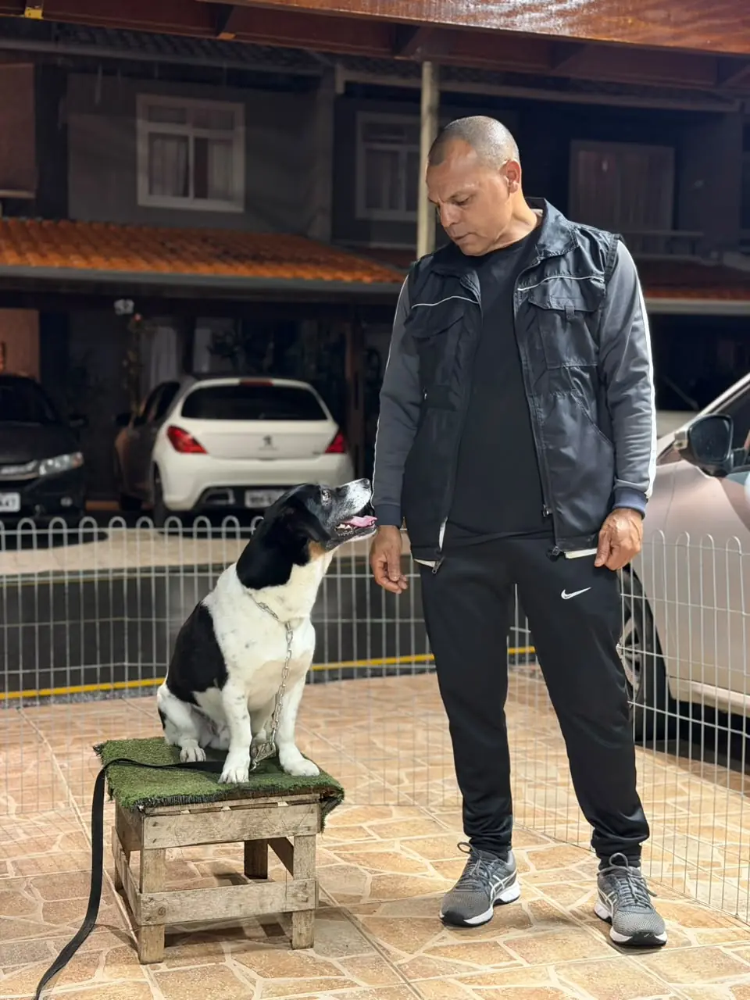
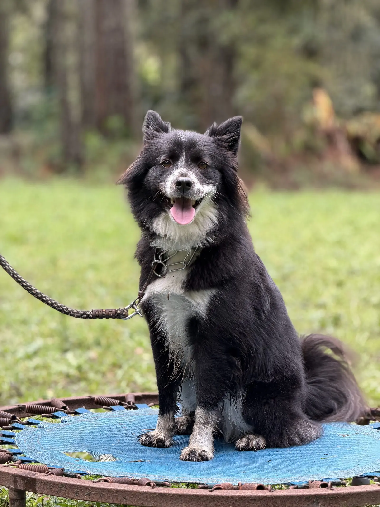
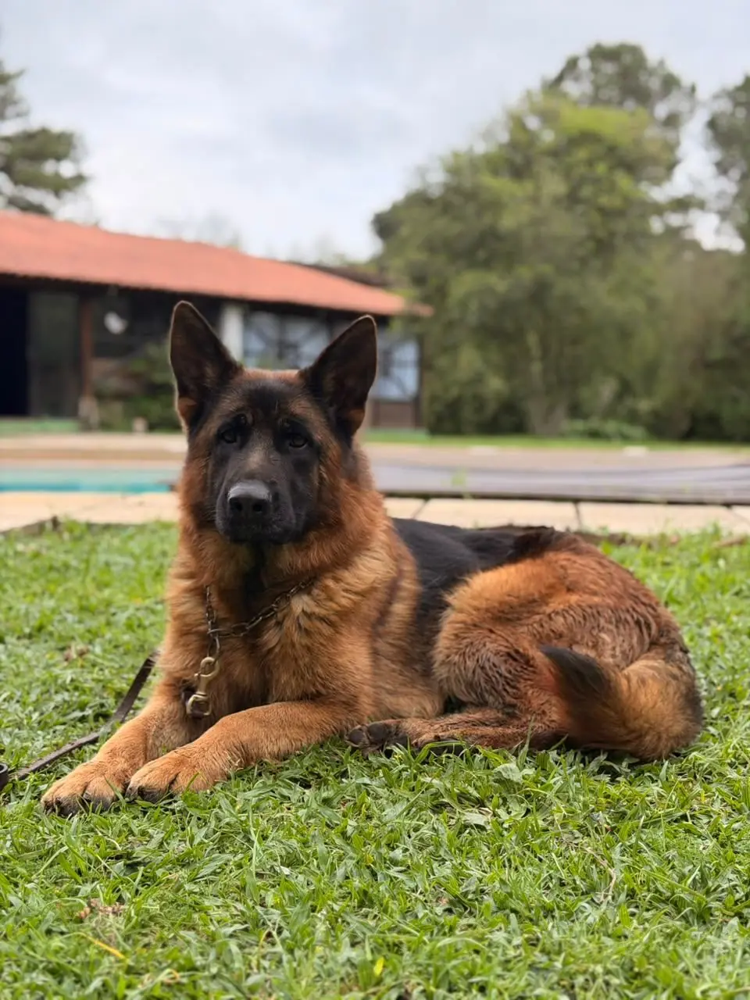
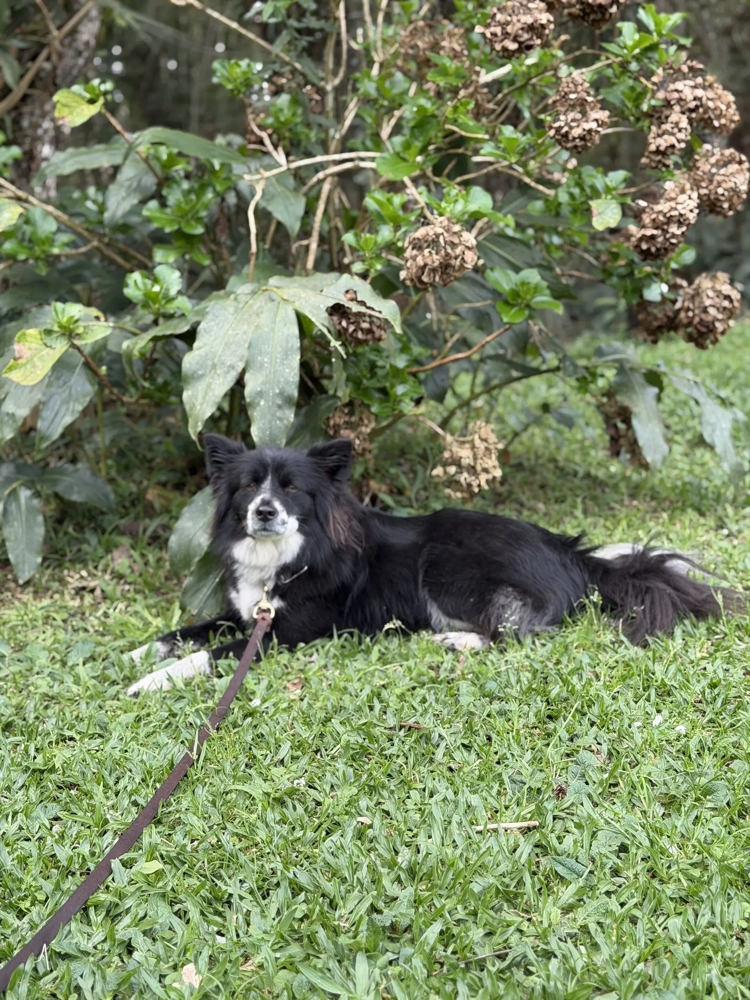
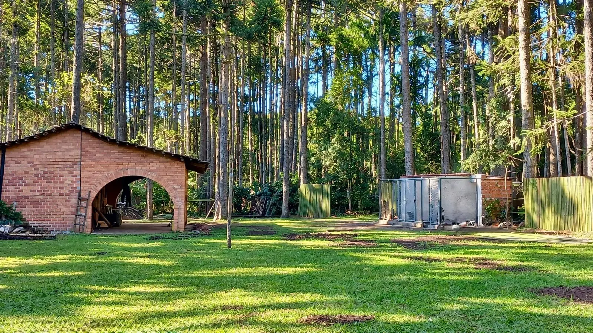
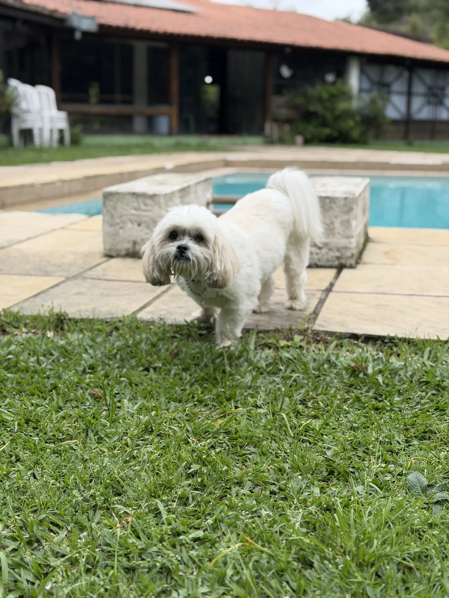

Genética selecionada
Linhagens com ascendentes registrados e avaliados em provas oficiais de trabalho.
CANIL VON HAUS SÓTTER
O Canil Von Haus Sótter, em São José dos Pinhais (PR), é especializado na raça Pastor Alemão e também referência em adestramento comportamental para cães de todas as raças. Genética de excelência, função, saúde e equilíbrio se unem em uma chácara de 32.000 m² cercada pela natureza.
SOBRE O CANIL
O Canil Von Haus Sótter nasceu da paixão de seu fundador pelos cães e do compromisso inegociável com a criação responsável, a cinofilia e o desenvolvimento comportamental de animais equilibrados.
Durante a pandemia, essa dedicação transformou-se em atuação profissional especializada. Com quase 10 anos de experiência prática em adestramento, premiações e títulos em campeonatos do meio cinófilo, Sótter consolidou uma metodologia focada na confiança, respeito e funcionalidade.
"Mais do que trabalhar com cães, nosso propósito é desenvolver animais saudáveis, equilibrados, confiáveis e verdadeiramente preparados para conviver em harmonia com seus tutores."


FILHOTES
Nossos filhotes crescem com amor, saúde e estímulos diários em um ambiente seguro, com natureza e cuidados profissionais.
CRIAÇÃO ESPECIALIZADA
Nossa criação é estritamente direcionada à preservação das características que tornam o Pastor Alemão uma referência mundial em trabalho e companhia.
Linhagens com ascendentes registrados e avaliados em provas oficiais de trabalho.
Rigoroso controle de displasia coxofemoral e de cotovelos, atestado via documentação genealógica e laudos técnicos.
Olhar experiente em adestramento acompanha os filhotes desde as primeiras semanas de vida, favorecendo temperamentos seguros, funcionais e equilibrados.


ADESTRAMENTO E COMPORTAMENTO
Embora nossa criação seja focada na raça Pastor Alemão, nossos serviços de adestramento e consultoria atendem cães externos de todas as raças e portes.
Indicada conforme avaliação prévia do animal. O adestrador atua diretamente na residência do tutor para alinhar rotinas, correções comportamentais e comandos básicos.
Voltado para cães que necessitam de reabilitação comportamental avançada, modificação de condutas severas ou treino intensivo de alta performance. O animal fica sob tutela total e cuidados contínuos da equipe durante o período estabelecido.





HOSPEDAGEM E CRECHE
Oferecemos modalidades flexíveis para atender à rotina dos tutores e garantir a recreação e o bem-estar dos cães. Ambos os formatos contam com passeios externos, recreação, aulas de relaxamento anti-stress e treinos de obediência.


CONTATO E AGENDAMENTO
Agende uma visita prévia com nossa equipe e conheça de perto o Canil Von Haus Sótter.
Caminho do Vinho - Colônia Mergulhão,
São José dos Pinhais - PR
Ver no Google Maps
Fale com a equipe pelo WhatsApp para marcar um horário e conhecer a estrutura pessoalmente.